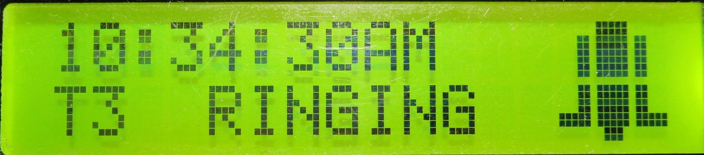

Ring Page

void Interface_Ring()
{
Functions_LCD.createChar(0, Symbols_bell1);
Functions_LCD.createChar(1, Symbols_bell2);
Functions_LCD.createChar(2, Symbols_bell3);
Functions_LCD.createChar(3, Symbols_bell4);
Functions_LCD.createChar(4, Symbols_bell5);
Functions_LCD.createChar(5, Symbols_bell6);
// Time
Functions_LCD.setCursor(0, 0);
Functions_LCD.print(Functions_tasks[Functions_taskPointer] + " ");
// Task number and state of alarm
Functions_LCD.setCursor(0, 1);
Functions_LCD.print("T" + String(Functions_taskPointer) + " RINGING ");
// Bell Symbol
Functions_LCD.setCursor(13, 0);
Functions_LCD.write(byte(0));
Functions_LCD.setCursor(14, 0);
Functions_LCD.write(byte(1));
Functions_LCD.setCursor(15, 0);
Functions_LCD.write(byte(2));
Functions_LCD.setCursor(13, 1);
Functions_LCD.write(byte(3));
Functions_LCD.setCursor(14, 1);
Functions_LCD.write(byte(4));
Functions_LCD.setCursor(15, 1);
Functions_LCD.write(byte(5));
Functions_Ring();
}
void Functions_Ring()
{
// Button controls
Buttons_Update();
switch(Buttons_ReturnPressedButton())
{
// Goto Home page
case RIGHT_BTN:
{
Functions_LCD.clear();
Buttons_ResetReturnedButton();
Functions_currentPage = HOME;
break;
}
}
if(!mute)
RingTone();
}
void RingTone()
{
digitalWrite(SPEAKER, HIGH);
delay(50);
digitalWrite(SPEAKER, LOW);
}